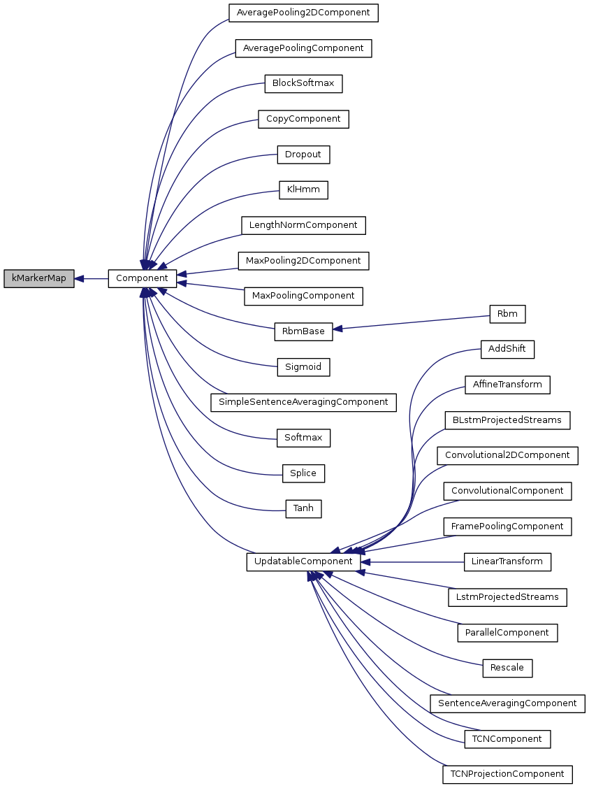

Kaldi
Main Page
Related Pages
Modules
Namespaces
Classes
Files
Class List
Class Index
Class Hierarchy
Class Members
All
Classes
Namespaces
Files
Functions
Variables
Typedefs
Enumerations
Enumerator
Friends
Macros
Groups
Pages
kMarkerMap Class Reference
Inheritance diagram for kMarkerMap:

[
legend
]
The documentation for this class was generated from the following file:
nnet/
nnet-component.cc
kMarkerMap
Generated on Thu Apr 28 2016 15:42:39 for Kaldi by
1.8.6

 1.8.6
1.8.6